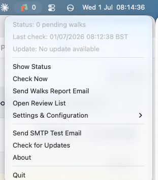
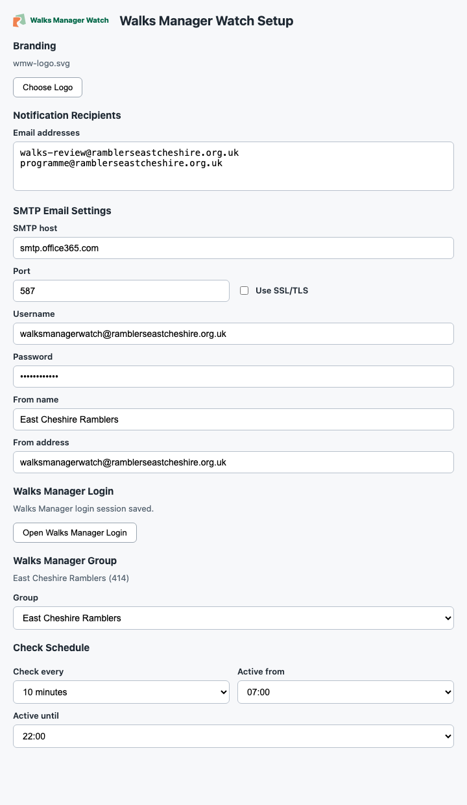
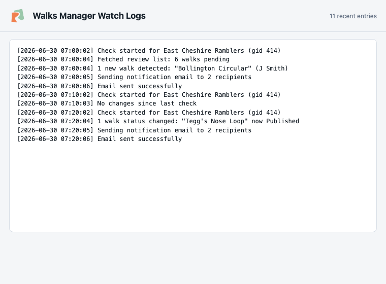
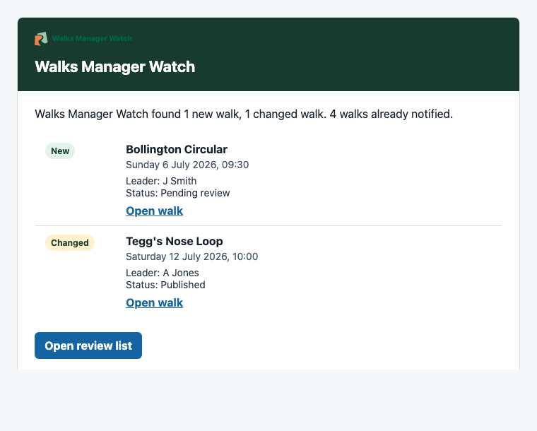

Checks Walks Manager
Runs scheduled checks against the configured Walks Manager group and keeps the pending count visible in the menu bar.
Desktop tray app for Walks Manager
Monitor Ramblers Walks Manager review queues, receive email notifications, and keep pending walks visible from your menu bar or system tray. Available for macOS and Linux.
Checking the latest GitHub release...

Walks Manager Watch is currently packaged for Apple silicon Macs. Windows and Linux builds are not published yet.
A small desktop tool built for group walk approvals.
Runs scheduled checks against the configured Walks Manager group and keeps the pending count visible in the menu bar.
Notifies configured recipients when new or changed walks need attention, with HTML email summaries and direct links.
Stores SMTP settings, recipients, branding, group selection, and the Walks Manager browser session on your computer.
On first launch the app opens the Setup window automatically. Work through it top to bottom — everything is saved locally on your Mac, nothing is sent anywhere except the emails you configure.
In "Notification Recipients", enter the email addresses that should receive walk review alerts — one per line.
Fill in "SMTP Email Settings" — host, port, SSL/TLS, username, password, from address, and from name — then use "Send Test Email" to confirm delivery.
Click "Open Walks Manager Login" under "Walks Manager Login". A browser window opens for you to sign in; the app saves the session so background checks don't need you logged in again.
Choose your group under "Walks Manager Group", set how often to check under "Check Schedule", then click "Save". The app runs its first check immediately.
Reopen Setup any time from the menu bar icon under Settings & Configuration. The same menu also has quick actions for Check Now, Open Review List, and Show Status.
The actual setup window, activity log, and notification email produced by the app.


